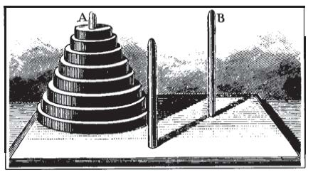

递归问题： 汉诺塔
1 问题描述
该问题由1883年法国数学家爱德华.卢卡斯。如下图所示

图 1: 汉诺塔
在柱子A上放着从小到大依次排列的8个盘子。我们的目标是：把这8个盘子从A柱移动到B柱上，可以根据需要决定移动过程中是否需要借助另外一根柱子。在移动盘子的过程中需要保证每一根竹子上的盘子都是大的在下小的在上，并且以此只能移动一个盘子。问：从完成8个盘子的移动任务需要多少次移动？
2 问题分析
这个问题是递归思想的典型代表。通常解决这样的问题我们可以有两个极端方向走：1）假设盘子个数为1,2等较小的数，2）假设盘子个数为\(n\)。当 \(n=1\)时，可以不借助辅助的柱子只一定一次就可以完成任务；当 \(n=2\)时，需要借助辅助的柱子移动三次完成任务。当 \(n\)较大时，我们可以设想如果 \(n\)个盘子的前 \(n-1\)个盘子都被移动到了辅助的柱子上，那么我们需要做的是把最大的那个盘子移动到B柱上，然后再把 \(n-1\)个盘子，按照之前的方法从辅助柱子移动到B柱上即可。假设移动前 \(n-1\) 个盘子到辅助柱子上所需要的移动次数是 \(T_{n-1}\)，则该问题的总移动次数就最多是
\[T_{n}\le 2T_{n-1} + 1, n\ge 1\]
接下来，我们需要指出， \(T_{n}\) 最少也是 \(2T_{n-1} + 1\)。那么到底存不存在一种方法比 \(2T_{n-1} + 1\)次更少的移动步数呢？事实上不存在！因为某一个时刻，我们必须移动最大的那个盘子到B柱子上，而此时前 \(n-1\) 个盘子必须在另外的辅助柱子上(这需要 \(T_{n-1}\) 次移动。)，而且当我们移动完那个最大的盘子到B柱后，我们还需要移动前 \(n-1\)个盘子到最大的盘子上，这需要另外的 \(T_{n-1}\)次移动。所以有：
\[T_{n}\ge 2T_{n-1} + 1, n\ge 1\]
即：至少需要的移动次数为 \( 2T_{n-1} + 1, n\ge 1\)。综上就有：
\[T_{n} = 2T_{n-1} + 1, n\ge 1\]
通常我们需要使用一个边界条件来使得递归式显得更加完满。
\begin{eqnarray} \label{eq:3} T_{0} &=& 0 \\ T_{n} &=& 2T_{n-1} + 1, n\ge 1 \end{eqnarray}3 递归式的解
可以利用数学归纳法来汉诺塔的解为： \[T_{n}=2^{n}-1,n\ge 0\]。 具体的证明参见《具体数学》第一章。
汉诺塔是递归问题的一个典型代表，此类问题的求解大致遵循以下三个步骤：
- 研究问题较小规模的情况。试图对问题的解做一些猜测，在做猜测的过程中有助于我们洞悉问题之真相。
- 得出问题的迭代表达式并证明该迭代表达式的有效性和可靠性。
- 求出迭代表达式的封闭形式并给出证明。求解迭代表达式的方式多种多样：除了先猜测再数学归纳证明外，在《算法导论》中，有一种主方法涵盖了常见的递归式的求解。
可以对汉诺塔的递归式做进一步的简化，
\begin{eqnarray} \label{eq:4} T_{0} +1 &=& 1 \\ T_{n} +1 &=& 2T_{n-1} +2 , n>0 \end{eqnarray}然后定义 \(U_{n} = T_{n} +1\), 则有：
\begin{eqnarray} \label{eq:5} U_{0} &=& 1 \\ U_{n} &=& 2U_{n-1} , n>0 \end{eqnarray}至此，我对高老头的佩服之情有如滔滔江水。。。。。。
4 拓展1：如果只能顺时针移动圆盘
设 \(Q_{n}\) 是将一个有 \(n\) 个圆盘的塔从 A移动到 B所需要的最少移动次数，要求所有的移动都必须是顺时针的，也就是说，从A到B，从B到其他的柱子，再从其他的柱子到A。又设 \(R_{n}\) 是在这一限制下从B返回到A所需要移动的最少次数，证明：
\begin{equation} \label{eq:1} Q_{n} = \begin{cases} 0, & n=0 \\ 2R_{n-1} +1, & n>0 \end{cases} \end{equation} \begin{equation} \label{eq:2} R_{n} = \begin{cases} 0, & n=0 \\ Q_{n} + Q_{n-1} +1, & n>0 \end{cases} \end{equation}这个问题是第一章的习题10。目前我还没有想到比较好的证明办法。习题答案给出的提示是：首先证明 \(R_{n} = R_{n-1} + 1 + Q_{n-1} + R_{n-1} +１\)
5 拓展2：双重汉诺塔
双重汉诺塔有 \(2n\) 个圆盘，它们有 \(n\) 个不同的尺寸，每一种尺寸的圆盘有两个。如通常那样，要求每次只能移动一个圆盘，且不能把较大的圆盘放在较小的圆盘上面。
- 如果相同尺寸的圆盘是相互不可区分的，要把一个双重塔从一根桩柱移动到另一根桩柱需要移动多少次？
- 如果在最后的排列中要把所有同样尺寸的圆盘回复称原来从上到下的次序，需要移动多少次？
对于第一个小问题，因为相同尺寸的圆盘是相互不可区分的，所以双塔问题等效于一个规模为 \(n\) 的汉诺塔问题，不同之处在于每次移动过程中需要对一个圆盘移动两次。双塔问题的劳动量等效于单塔问题劳动量的2倍。所以对于第一个问题有： \(H_{2n}= 2H_{2n-2} +2\) 得出有： \(H_{2n} = 2*(2^{n}-1) = 2^{n+1}-2\)
对于第二个问题。设置 \(B_{n}\) 是最少移动次数。这样就有 \(B_{1}=3\) ，可以证明，当 \(n>1\) 时任何策略都做不到优于 \(B_{n} = A_{n-1} +2 + A_{n-1} + 2 + B_{n-1}\) , 于是对于所有的 \(n>0\) 有 \(B_{n} = 2^{n+2} -5\)，令人惊奇的是，这恰好是 \(2A_{n} -1\), 而且我们还有 \(B_{n} = A_{n-1} + 1 + A_{n-1} + 1 + A_{n-1} +1 + A_{n-1} + 1\)